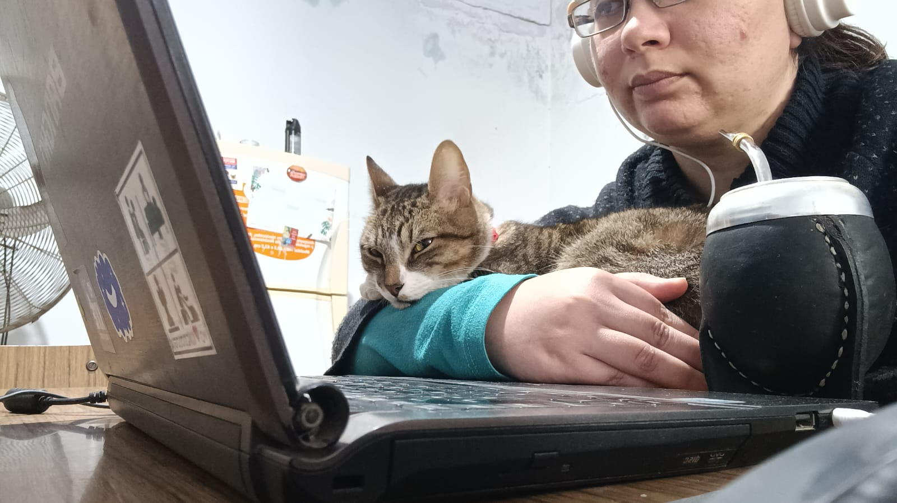

La vida de Miku
Bienvenidos a esta pequeña página! Mi nombre es Laila y me gustaría presentarles a Miku, un hermoso gatito que llegó a nuestras vidas el 4 de noviembre de 2021. Aunque su belleza innata no lo demuestre, cuando nos adoptó, no se encontraba en las mejores condiciones. Había sido abandonado con apenas un mes y medio de vida, con una patita coja, lleno de parásitos y con su ojito caído.
A pesar de no saber cómo alimentarse por sí mismo, aprendió y se convirtió en lo que es hoy en día: un compañero muy cariñoso, juguetón y, a veces, un poco cascarrabias. Además, es muy friolento.
A Miku le encanta jugar con una pelota de goma o una bolsa, y también disfruta meterse en cajas (es un gato económico en ese sentido). Cuando tenía 7 meses, decidimos castrarlo. Teníamos mucho miedo de que su carácter o su forma de ser cambiaran, pero, para nuestra alegría, siguió siendo igual que siempre, e incluso más tranquilo. Ya no marca territorio, algo que agradecimos mucho, ya que en una ocasión lo hizo dentro de un casco de moto.
Su alimentación se basa en un alimento seco llamado Nutrique. Le encanta el pollo, el hígado y el pescado, aunque no es tan fanático de la carne vacuna, y no hemos probado darle cerdo porque no nos gusta a nosotros. Le vuelve loco las aceitunas y le encanta robar palta (aunque sabemos que no es bueno para él).
Miku es un gran compañero de estudio, siempre nos acompaña cuando estamos enfermos e incluso estuvo presente durante mis rehabilitaciones en el consultorio de kinesiología, brindándome a los pacientes michiterapia.
En el día a día, lo llamamos de varias maneras:
- Miku (su nombre original).
- Mikus kikus (el término "kikus" proviene de mi ahijada, quien solía llamar "kiku" a todo lo pequeño).
- Mikus kikus pikus (en este punto, su nombre ya se ha distorsionado y no sabemos de dónde surgió "pikus").
- Mikus kikus pikus chiquitus y bonitus (en este punto, su nombre parece una versión en latín).
- Mikules (una mezcla entre Miku y Hercules)
No solo recibe múltiples formas de llamarlo, sino que además, el automóvil ahora se llama "mikuneta", ya que él se ha adueñado más de él que nosotros, aunque no le gusta viajar.